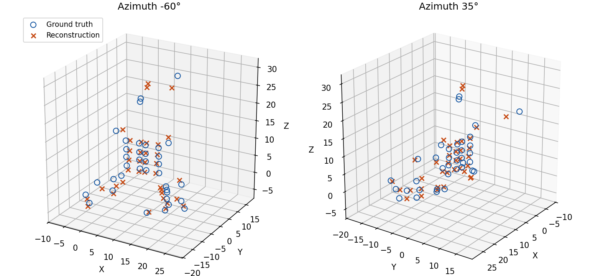
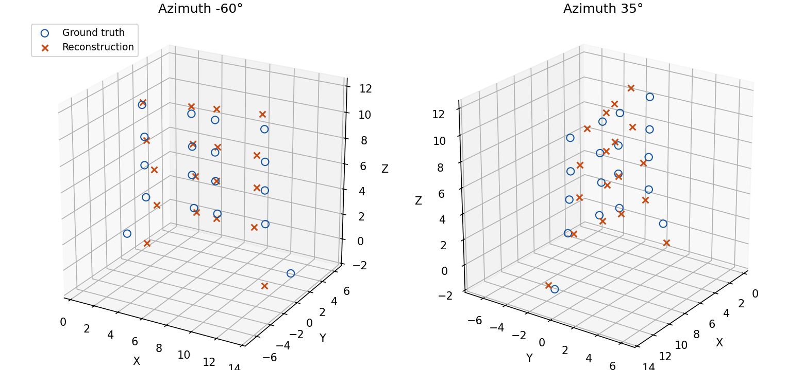

& Structure from Motion
SYDE 671 · Assignment 4 · James Xie
PART 3 · THE FACTORIZATION
METHOD
Recover 3D structure by factoring joint image measurements.
(a) Factorization
The factorization takes matching pixels from two views and returns a 3 × N structure matrix and a 4 × 3 motion matrix. A synthetic affine scene checks that their product recovers the centered measurements to numerical precision. A second test checks that the fourth singular component is discarded.
(b) Implementation
Stack the x and y coordinates from both images in a 4 × N matrix. Subtract each row mean to remove the image translations and write the centered matrix as W = UΣVT. Keep the three largest singular values and split their square roots between the motion and structure factors.
Ground truth is used only to align and evaluate the recovered structure.
(c) Full-set reconstruction
Fit a similarity transform to compare the 37 recovered points with ground truth. The plots show the same alignment from two angles. The similarity uses translation, one scale and an orthogonal transform that may reflect the coordinates because the recovered handedness is arbitrary. A second fit allows a general affine transform.

| Fit | Similarity | Affine |
|---|---|---|
| All 37 points | 1.6876 (14.55%) | 1.0634 (9.17%) |
The reconstruction recovers the overall geometry. The affine fit reduces the error further because an invertible 3 × 3 change of coordinates in S can be absorbed by its inverse in M. The two-view factorization alone therefore leaves scale, orientation and more general affine distortion unresolved.
(d) Full-set singular values
The four singular values of the centered full-set measurements are:
The fourth is 15.1358% of the third. In an ideal affine camera model the centered matrix is a product of a 4 × 3 motion matrix and a 3 × N structure matrix, so at most three singular values are nonzero. Perspective effects and imperfect point annotations can violate that model and produce a nonzero fourth value.
(e) Subset reconstruction
Repeat the factorization using only the 18 supplied correspondences. For a comparison on the same points, also take those 18 points from the full fit and align them to the same ground truth.

| Fit | Similarity | Affine |
|---|---|---|
| Subset fit | 1.0436 (19.81%) | 0.1152 (2.19%) |
| Full fit on the same points | 0.7735 (14.68%) | 0.0945 (1.79%) |
The subset-only fit gives higher error under both alignments. The subset is nearly planar. Its ground-truth spread perpendicular to the best-fit plane is about 0.09 units, compared with 3.34 and 4.07 units along the two in-plane directions. The image measurements therefore give relatively little information about the third structure direction.
(f) Subset singular values
The two spectra differ most in the separation between the third and fourth components.
| Component | Full set | Subset |
|---|---|---|
| σ1 | 959.5852 | 264.5440 |
| σ2 | 540.4761 | 210.0607 |
| σ3 | 184.4317 | 7.2192 |
| σ4 | 27.9152 | 5.1286 |
| σ₄ / σ₃ | 15.1358% | 71.0406% |
Fewer points and a smaller spatial spread reduce the overall magnitude of the spectrum. The third value drops disproportionately, bringing it close to the discarded fourth component. That smaller gap helps explain why the recovered third direction is more sensitive to deviations from the affine model.